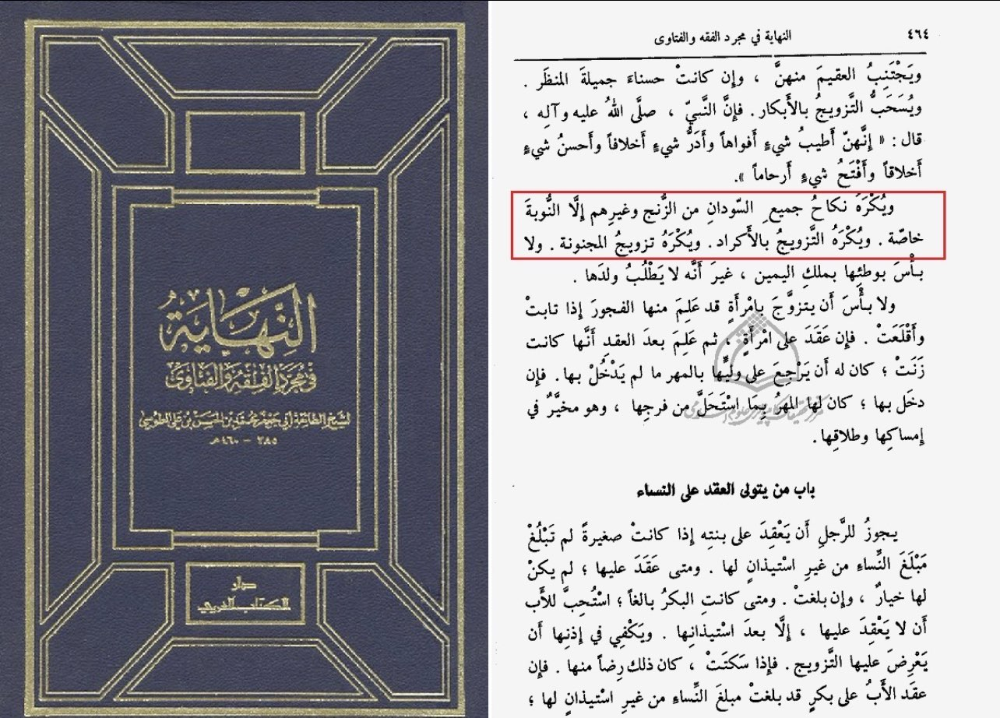
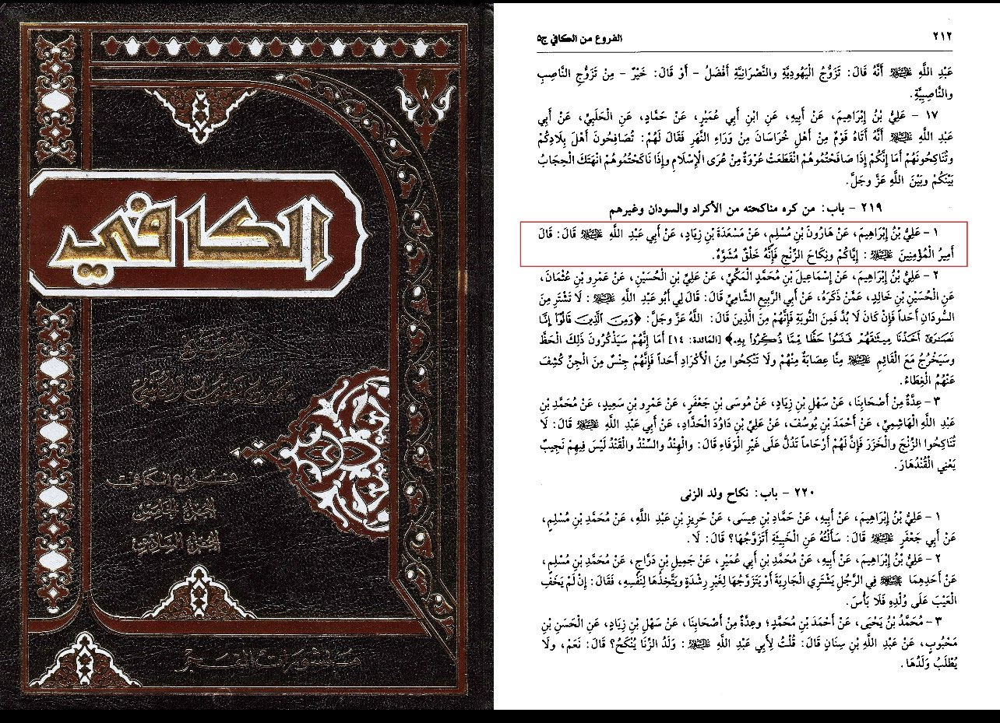
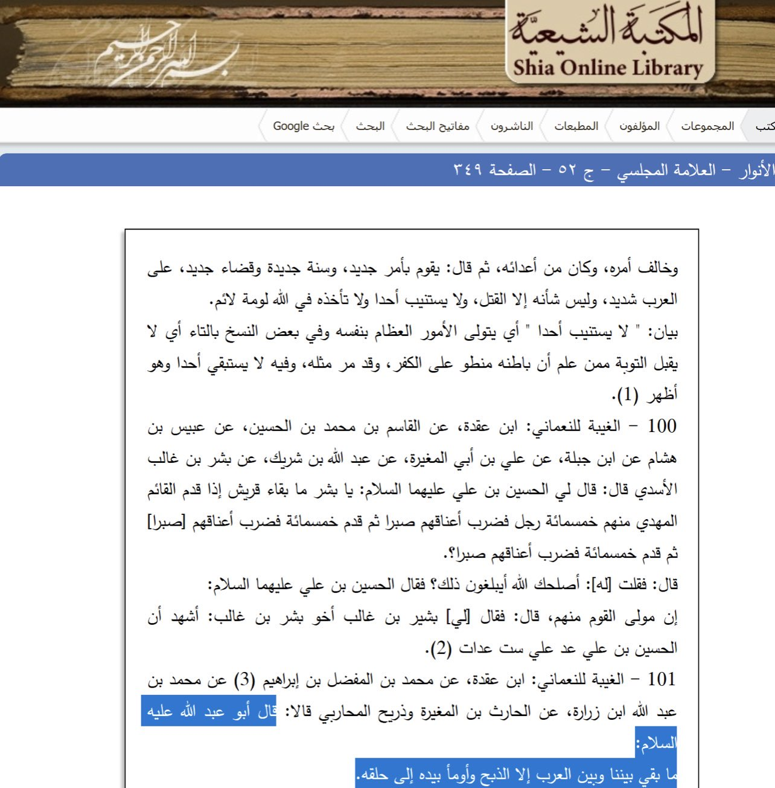
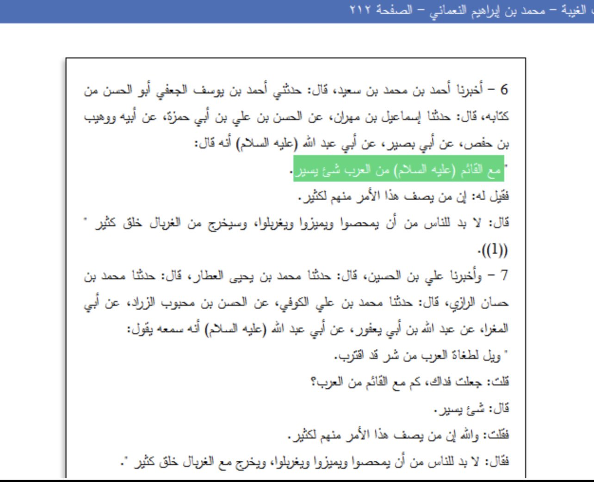
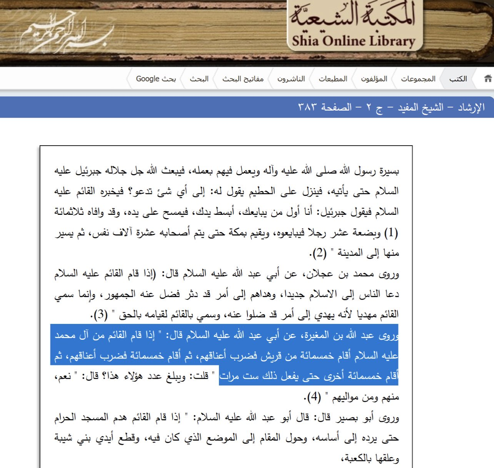
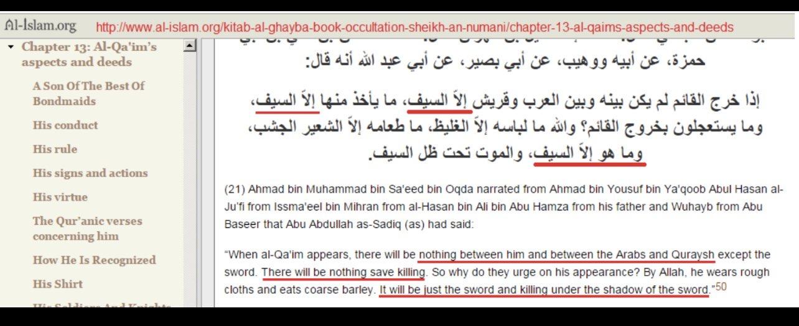

قال أمير المؤمنين (ع): إياكم ونكاح الزنج فإنه خلق مشوه
“Beware of marrying the black (Zunj) for they are an ugly creation.”
——
Shia version of Imam Mahdi will genocide the Arabs out of existence

"There will be nothing left between us and the Arabs, except slaughter.
He then demonstrated the slaughter with his hands at his throat."
Bihar Al-Anwar 52/349
Also found in Kitab Al-Ghaibah by Al-Numani which is a book on the Shi’i Aqeedah concerning the Mahdi
on chapter 13 page 155.

Imam Jafar Al-Sadiq was asked: “How many of those who accompany the Qa’im are Arabs?” Ja’far said:
“Very few“; then someone said, “But numerous are the Arabs who profess this Cause,” and Ja’far replied:
“People will inevitably be chosen, separated, siftyed through; many are those who will fall through the sifter.”
Kitab Al-Ghaybah 12/298-299

On the authority of Abi Abdillah (Imam Al-Sadiq) who said: “When the Qa’im from the family of Mohammad,
peace be upon him, rises, he will resurrect five hundred from Quraish (dead people of Prophet Muhammad’s tribe)
and cut off their necks, then another five hundred, until he does this (action) six times.”
Al-Irshad 2/383
This sadist will resurrect them just for the sake of chopping their heads off! All together six times!
Ironically the Rafidah call IS/Daesh barbaric ...

“When al-Qa'im appears, there will be nothing between him and between the Arabs and Quraysh except the sword.
There will be nothing save killing. So why do they urge on his appearance? By Allah, he wears rough cloths and
eats coarse barley. It will be just the sword and killing under the shadow of the sword.”
Mo’jam Ahadeeth al-Imam al-Mahdi, vol.3 p.253
Why do these narrations even exist in the first place (possible Majoosi-Sassanian fabrication?).